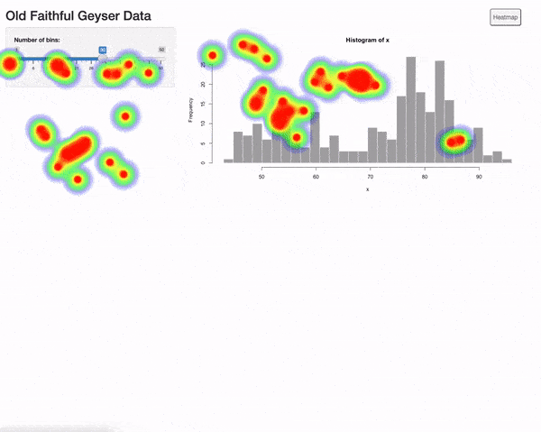
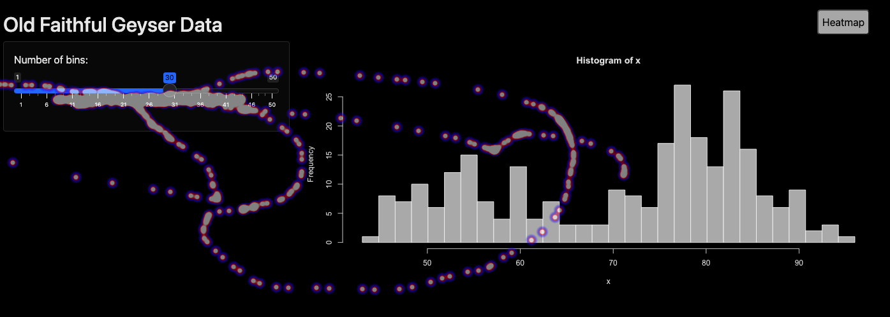

The goal of shinyHeatmap is to provide a free and local alternative to more advanced user tracking platform such as Hotjar.
shinyHeatmap generates beautiful and persistent visual heatmaps, representing the app usage across many user sessions.
If you ever wondered:
- Is the left action button used?
- Did people notice the new tab?
- Is the top left checkbox still useful?
You should give it a try! If you’re concerned about data privacy, shinyHeatmap only records x and y clicks coordinates on the window.

Installation
You can install the development version of shinyHeatmap from GitHub with:
# install.packages("devtools")
devtools::install_github("RinteRface/shinyHeatmap")Getting started
shinyHeatmap only requires 2 functions:
-
with_heatmap(), on the UI side. -
process_heatmap(), on the server side.
In the following part, we provide more instructions.
How to use it
The app must have a www folder since heatmap data are stored in www/heatmap-data.json by default.
In
ui.R, wrap the UI insidewith_heatmap(). This contains all necessary dependencies (JavaScript code, …) to record and display the heatmap.In
server.R, callprocess_heatmap(). Overall, this recovers the coordinates of each click on the JS side and store them inwww/heatmap-<USER_AGENT>-<DATE>.json. This may be used later to preview the heatmap by aggregating all compatible user sessions. For instance, mobile platforms are not aggregated with desktop since coordinates would be incorrect. With vanilla shiny templates likefluidPage, you don’t need to change anything. However, with more complex templates, you can pass the heatmap container CSS selector with the target parameter such asprocess_heatmap(target = ".wrapper"). If the app takes time to load, a timeout parameters is available. This could be the case when you rely on packages such as {waiter}. For more complex patterns, you may want to use trigger parameter to control when to record the heatmap. See the navbar example below.Locally, you can test your heatmap recording by using browsing to
http://127.0.0.1:<PORT>?get_heatmap,?get_heatmapensuring to run the app in preview mode for the heatmap. Under the hoods,process_heatmap()will calldownload_heatmap(), which will read data stored in the JSON files, generate the heatmap and save it as a png file. By default,download_heatmap()will show a tiny UI below your app. It allows to see a timeline of the app usage as shown below. To disable the UI, you can calldownload_heatmap(show_ui = FALSE), which will show all the aggregated data as well as take a screenshot of the heatmap area.Deploy the app on the server of your choice (Rstudio Connect, Shiny server, …) and let the end-users interact with it.
To preview the heatmap from deployed app, there are 2 solutions:
- Browse to the app url with a query parameter such as
<APP_URL>?get_heatmap, which will run the heatmap in display mode so that you don’t record extra actions by interacting with it. - Dump the deployed app
wwwfolder and copy it locally. Run the local app with<APP_URL>?get_heatmapas in 3.
Note: Since process_heatmap() is clever enough to switch between recording and display, we don’t recommand using record_heatmap() or download_heatmap() directly. If you do, don’t forget to remove record_heatmap() so that you don’t generate extra logs when inspecting the heatmap.
Below shows an example to record the heatmap:
library(shiny)
library(shinyHeatmap)
# Define UI for application that draws a histogram
ui <- with_heatmap(
fluidPage(
# Application title
titlePanel("Old Faithful Geyser Data"),
# Sidebar with a slider input for number of bins
sidebarLayout(
sidebarPanel(
sliderInput(
"bins",
"Number of bins:",
min = 1,
max = 50,
value = 30
)
),
# Show a plot of the generated distribution
mainPanel(plotOutput("distPlot"))
)
)
)
# Define server logic required to draw a histogram
server <- function(input, output, session) {
process_heatmap()
output$distPlot <- renderPlot({
# generate bins based on input$bins from ui.R
x <- faithful[, 2]
bins <- seq(min(x), max(x), length.out = input$bins + 1)
# draw the histogram with the specified number of bins
hist(x, breaks = bins, col = 'darkgray', border = 'white')
})
}
# Run the application
shinyApp(ui = ui, server = server)App with navbar
For app with navbar like with shiny::navbarPage() or dashboard with sidebar items, you’ll need to record one heatmap per tab. This can be achieve since shinyHeatmap 0.2.0.9000 like below:
- Give an id to the navbar menu.
- Pass it in the trigger parameter of
process_heatmap()(orrecord_heatmap()anddownload_heatmap()).
To browse between multiple pages, you’ll have to toggle the heatmap visibility thanks to the new toggle button. This is necessary because the heatmap z-index is set to the maximum and you can’t click anywhere else after, except the toggle heatmap button.
library(shiny)
library(shinyHeatmap)
# Define UI for application that draws a histogram
ui <- with_heatmap(
navbarPage(
id = "navbar",
"Navbar!",
tabPanel(
"Plot",
sidebarLayout(
sidebarPanel(radioButtons(
"plotType", "Plot type",
c("Scatter" = "p", "Line" = "l")
)),
mainPanel(plotOutput("plot"))
)
),
tabPanel("Summary", verbatimTextOutput("summary")),
navbarMenu(
"More",
tabPanel("Table", DT::dataTableOutput("table")),
tabPanel(
"About",
fluidRow(
column(6, "Blabla"),
column(
3,
img(
class = "img-polaroid",
src = paste0(
"http://upload.wikimedia.org/",
"wikipedia/commons/9/92/",
"1919_Ford_Model_T_Highboy_Coupe.jpg"
)
),
tags$small(
"Source: Photographed at the Bay State Antique ",
"Automobile Club's July 10, 2005 show at the ",
"Endicott Estate in Dedham, MA by ",
a(href = "http://commons.wikimedia.org/wiki/User:Sfoskett",
"User:Sfoskett")
)
)
)
)
)
))
# Define server logic required to draw a histogram
server <- function(input, output, session) {
#record_heatmap(
# trigger = reactive(input$navbar),
# target = "body"
#)
#download_heatmap(trigger = reactive(input$navbar))
process_heatmap(trigger = reactive(input$navbar), target = "body")
output$plot <- renderPlot({
plot(cars, type=input$plotType)
})
output$summary <- renderPrint({
summary(cars)
})
output$table <- DT::renderDataTable({
DT::datatable(cars)
})
}
# Run the application
shinyApp(ui = ui, server = server)Options
shinyHeatmap allows to tweak the heatmap style with few lines of code. This may be achieved with the options parameter that expects a list of properties available in the heatmap.js documentation. For instance, below we change the points radius and color:
process_heatmap(
options = list(
radius = 10,
maxOpacity = .5,
minOpacity = 0,
blur = .75,
gradient = list(
".5" = "blue",
".8" = "red",
".95" = "white"
)
)
)This is ideal if your app contains custom design like in the following example.

Acknowledgement
shinyHeatmap is proudly powered by the excellent and free heatmap.js library. Thanks @pa7 for making this possible.